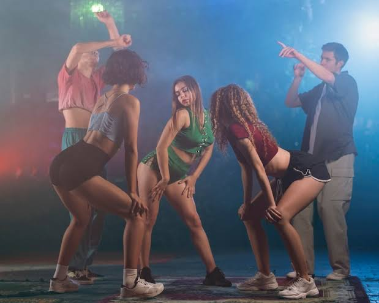
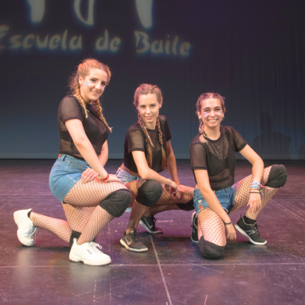
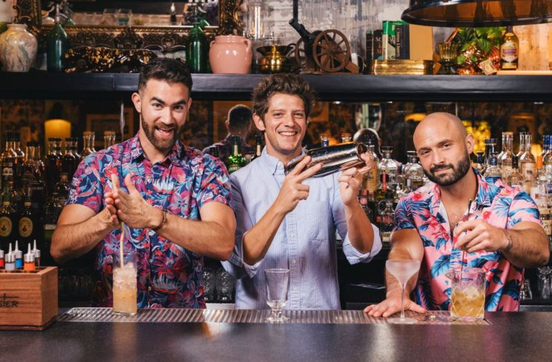
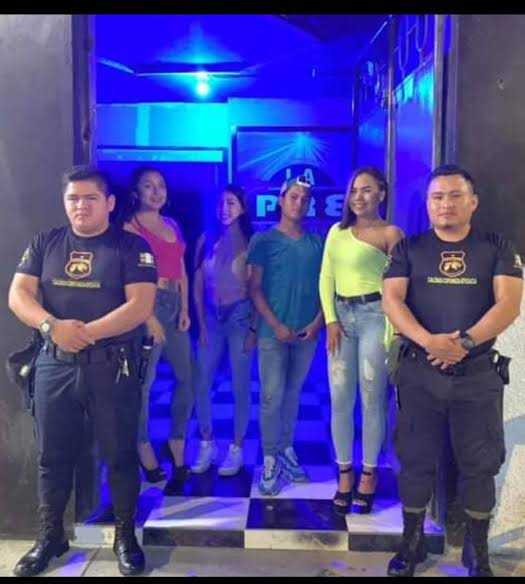

<DOCTYPE html 
 html lang="es">
<head>
    <meta charset="UTF-8">
    <meta http-equiv="X-UA-Compatible" content="IE=edge">
    <meta name="viewport" content="width=device-width, initial-scale=1.0">
    <title> SALUD Y VIDA DISCOTEK</title>
</head>

<!-- ==========================================
ENCABEZADO Y NAVEGACIÓN
=========================================== -->

<header>
 <center> 
 <body style= "background-color:rgb(2, 2, 2); color:rgb(255, 252, 252);">  
 
</center>

 <header style="text-align:center;">
    <h1 style="color:#ff007f; font-size: 40px;"> <b> SALUD Y VIDA DISCOTEK </b> </h1>
    <h2 style="color:#00f3ff; font-size: 32px;"><i>¡El punto de referencia del perreo en Medallo! </i></h2> 
 <nav style="background-color: #212121; padding: 10px; border-radius: 8px; margin-top: 10px;">   

<nav> 
 <hr>
    <table border="1" style="margin:auto; border-color:#ff007f;">
        <tr>
            <td style="text-align:center;"><a href="1.index.html" style="color:#fcfcfc;">Inicio</a></td>
            <td style="text-align:center;"><a href="2.nosotros.html" style="color:#fcfcfc;">Sobre Nosotros</a></td>
            <td style="text-align:center;"><a href="#galeria" style="color:#fcfcfc;">Galería y reservas</a></td>
            <td style="text-align:center;"><a href="#login" style="color:#fcfcfc;">Inicio de Sesión</a></td>
        </tr>
    </table>
</nav>
<br>

 <br>

<p> 
<h2 style="color:#ff007f;"> Nuestros origenes </h2> 
    <h4> 
    Salud y Vida DiscoteK es todo un ícono del perreo en Medellín, nacio en el 2010 en pleno corazón de <br>
    Provenza, fue fundada por varios jóvenes apasionados por el género y el baile, como fuente de bienestar. <br>
    </h4>

<h2 style="color:#ff007f;"> Nuestra misión </h2> 
    <h4>
     Reunir a todos los amantes del reggaetón en un solo lugar, en Salud y Vida discoteK creemos en el<br>
     dinamismo del baile para la salud y enriquecer la vida socializando y compartiendo entre amigos.<br> 
     </h4> 

<h2 style="color:#00f3ff;"> Nuestro equipo </h2> 
<h4> Personal comprometido desde los profesores de baile, barterders hasta el equipo de seguridad. <br>
</h4> 

   <table border="1" style="margin:auto; border-color:#ff007f;">
            <tr>
                <td></td>
                <td></td>
                <td></td>
            <tr>
            <tr>
                <td style="text-align:center;"><b>Bailarines</b></td>
                <td style="text-align:center;"><b>Bartenders</b></td>
                <td style="text-align:center;"><b>Seguridad</b></td>
            </tr>

                </table>

<h2 style="color:#00f3ff;"> Clases de baile </h2> 
   <h4>
    Para los que se sienten muy tiesos o piensan que no saben bailar bien, disponemos de clases de baile, <br>
     nuestros profesores cuadran esos pequeños detalles antes de unirse al parche. <br>
    </h4> 

</header>

</body> 

<br>

<!-- ==========================================
PIE DE PÁGINA
=========================================== -->

<footer 
style="text-align:center;">
    <p><small>Calle 10 # 36-24, El Poblado, Medellín, Colombia</small></p>
    <p><small>© 2026 Salud y Vida Discotek. Todos los derechos reservados.</small></p>
</footer>

</body>

</html>

